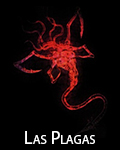
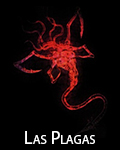

Bioterrorismo e Resident Evil
Trabalho interdisciplinar sobre Bioterrorismo.
O que é Bioterrorismo?

Esse tipo de terrorismo é causado por meio da liberação ou disseminação intencional de agentes biológicos tais como toxinas, vírus e bactérias. Esses agentes podem ser utilizados in natura ou modificados pelo homem com diversas finalidades, entre elas: serem mais facilmente dispersos pelo meio ambiente, reforçar a resistência contra os medicamentos já existentes. Eles podem ser dispersos pelo ar, pela água ou através de alimentos, podendo causar doenças não só em seres humanos, mas também em animais e plantas. Os agentes biológicos são difíceis de serem detectados, porque normalmente provocam sintomas depois de horas ou dias.
O bioterrorismo é hoje uma ameaça real em todo o mundo. Considerando-se que as ações de bioterrorismo utilizam agentes biológicos capazes de promover grandes epidemias e sobrecarga nos sistemas de saúde de qualquer cidade, estado ou país, o bioterrorismo passa a ser não apenas uma preocupação de governantes e militares, mas também dos profissionais da área da saúde.

Como o Bioterrorismo pode nós afetar ?
O bioterrorismo é causador de medo em cidadãos pelo fato de você não saber, quando e quem vai fazer o atentado, assim causando insegurança.
Ataques terroristas têm efeitos devastadores: vidas são perdidas, famílias destruídas, pânico e revolta tomam conta dos cidadãos. Mas esses efeitos podem ser ainda mais perversos. Podem afetar a economia do país ou da região alvo do terrorismo. Além disso, como bioterrorismo é uma doença criada em laboratório, pode demorar um grande tempo para descobrir a cura, assim causando uma grande quantidade de morte.

Relação com o jogo Resident Evil
Resident Evil é uma franquia de mídia que pertence à empresa de videogames Capcom. Foi criada por Shinji Mikami como uma série de jogos de survival horror, iniciada em 1996 com Resident Evil para PlayStation. Desde então, a série de jogos passou a incluir o gênero ação e até agora já vendeu mais de 100 milhões de unidades. Também foi lançado 6 filmes baseados no jogo onde a história é basicamente a mesma. O jogo tem uma grande relação com o assunto pois, no jogo, a cidade teve um ataque bioterrorista onde o vírus lançado pela corporação farmacêutica chamada Umbrella Corporation, faz com que as pessoas virem canibais e comecem a atacar o próximo de uma forma bruta e violenta. Em Resident Evil, existem 11 vírus criados pela empresa, C-Vírus, G-Vírus, Las Plagas, NE-Alpha, Progenitor Vírus, T-Abyss, T-Phobos, T-Vírus, T-Veronica, T+G Vírus e Uroboros. Cada jogo, controlamos um personagem diferente, nenhum foi designado para combater a empresa ou o vírus, alguns desconhecem a existência do mesmo na cidade, quando chegam a cidade já está infectada. Ao decorrer da história combatemos vários inimigos contaminados pelos vírus, uns mais fortes que os outros. Os indivíduos são contaminados através da mordida ou meios artificiais. Quando contaminados começam a ficarem violentos e apresentam sintomas dependendo do vírus.
 



Ocasiões que ocorreram Bioterrorismo
A história mundial já nos deu algumas amostras do que esse tipo de arma pode fazer. Em 2001 e 2002, nos Estados Unidos, algumas figuras importantes receberam pelo correio, envelopes contendo esporos de Antraz, o Bacillus anthracis, que causa grave doença respiratória, e se não tratada rapidamente, leva à morte em quase 100% dos casos, além disso, o diagnóstico preciso é difícil.
Na 2° Guerra Mundial o Japão liberou uma chuva de pulgas sobre a China. Como assim? Isso mesmo, com aviões, o Japão pulverizou pulgas sobre o inimigo, mas não eram quaisquer pulgas, os animais estavam contaminados com a Yersinia pestis, bactéria causadora da Peste Negra ou Peste bubônica, que assolou a Europa nos anos 1300, matando cerca de 200 milhões de pessoas, aproximadamente um terço da população total da Europa.